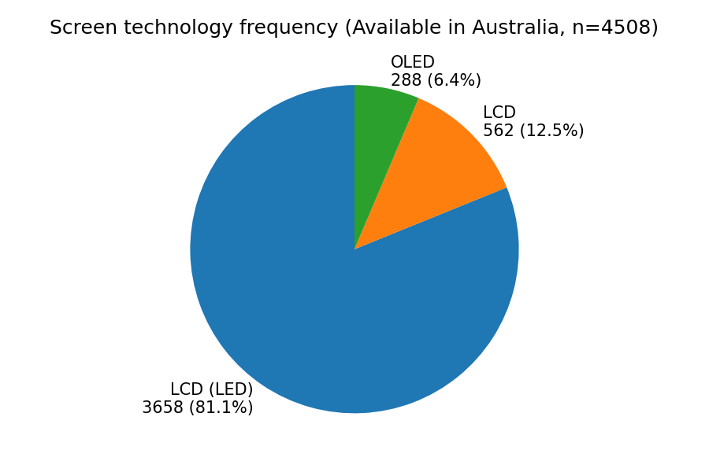
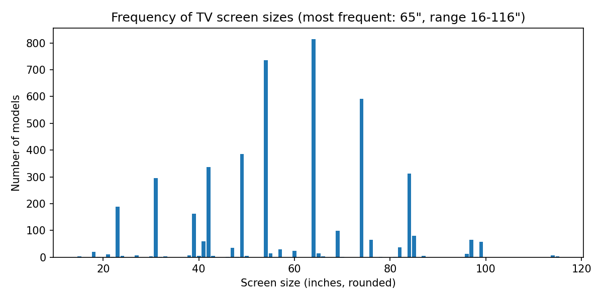
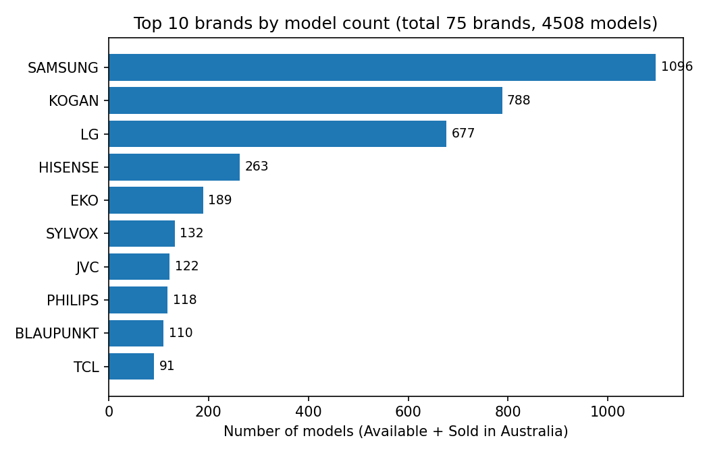
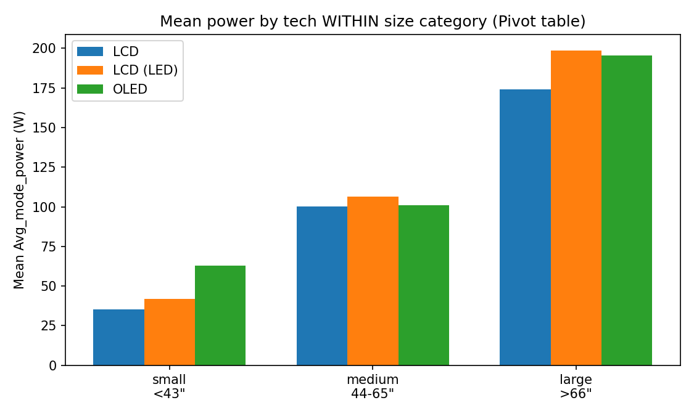
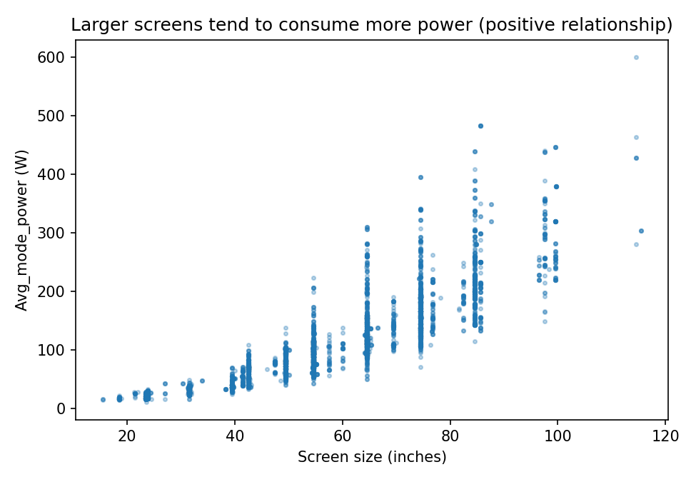

TV Energy · AustraliaCOS30045 Data Visualisation — Executive Story
Australian Energy Rating · Feb 2026 dataset
Which TV should Australia buy to save power?
Analysis of 4,508 TV models actually on sale in Australia. From market overview to a clear buying recommendation — in one scroll, built for decision-makers.
4,508
TV models on sale in AU
81%
are LCD (LED) — market standard
40W → 197W
Small vs Large avg. power (5× gap)
LCD wins
Lowest power in every size class
Try it: energy cost calculator
Same idea as the reference design: pick a preset (real KNIME means) or type watts → hours → price → Update estimate. Result shows day / month / year.
INTERACTIVE TOOLLive estimate
Energy cost calculator
W
hrs
¢/kWh
Check your latest electricity bill for your usage rate. 32¢ = $0.32/kWh.
Estimated yearly cost based on 365 days$61.61
Daily energy0.53 kWh
Monthly energy16.0 kWh
Yearly energy192.5 kWh
Monthly cost$5.13
105.5W × 5h × 365 ÷ 1000 = 192.5 kWh × $0.32
Storyboard — read each chart in 10 seconds
Yellow = the one number to remember. Green = what to do with it.
01
Tech share — who owns the market?
81% LCD (LED)
OLED is bigger on average (65"), so never compare raw averages.
02
Sizes — where is demand?
55" & 65" peaks
Bump at 150–175 cm = real large TVs (checked Model_No).
03
Brands — who fills shelves?
SAMSUNG 1,096
Kogan 788 · LG 677. Top 3 hold over half of 4,508 models.
04 ★
Fair fight — same size, who wins?
LCD wins all sizes
35 / 100 / 174W. OLED ≈ LED in medium & large. Note: small-OLED n=17.
05
Size → bill, stars → efficiency
40W → 197W
Power rises with size; stars stay flat (size-adjusted index).
06
Proof pair (Ex2)
3 bars + avg size
Why Chart 04 must control for size. Mean for Watts, median for Stars.
✔ Recommendation — what should Australia buy?
Size first — biggest saving. Large ≈ 197W vs small ≈ 41W (≈5×). Dropping one class (large → medium) saves ~90W ≈ $50+/year at 5h/day, 32¢/kWh. Try it in the calculator above.
Tech second. Same size → pick LCD for lowest bill; LED is the safe mainstream; OLED only if you accept extra Watts (worst in small sizes).
Stars the right way. Compare stars only within the same size. A big 8★ still costs more than a small 6★.
Example to tell the teacher: "A 55" medium (105.5W, 5h/day) costs ~$62/year; the same use on a 75" large (196.5W) costs ~$115/year — same movie, +$53/year."
How to read this story (30 seconds)
Designed for a busy executive: each card follows Question → Chart → So what? Follow steps 01–06 in order.
Why efficiency matters
Efficient TVs cut household bills and peak load. Size matters far more than brand: moving from a large (>66") to a medium (44–65") TV saves on average ~90W in typical viewing mode.
What this proves
Screen technology share, dominant sizes (55" & 65"), brand concentration (Top 3 hold >50%), and like-for-like power comparison controlled by size — so OLED vs LED is compared fairly.
Data story · live from KNIME
Television energy in Australia, explained for buyers
All charts are drawn live with D3.js from KNIME-cleaned CSVs (knime_output/*.csv). Re-run the KNIME workflow → overwrite CSV → refresh this page. Dataset: tv_2026_02_15.csv, 4,508 models Available & sold in Australia.
01
Market landscape
What screen technologies are Australians actually choosing from?

02
Size demand
Which screen sizes dominate? Where is the sweet spot?

03
Brand concentration
Who fills the shelves? Top 10 brands by model count

04
Like-for-like efficiency — the key chart
Which technology uses the least power at the same size?
Sample:

05
Size → power & stars
Bigger screen = bigger bill. But stars don't fall with size.

06
Ex2 required comparisons
Average power by size class & average size by technology
Executive verdict — what should we tell shoppers?
1 · Size first
Size drives ~5× power gap (40W → 197W). Downsizing one class saves more than switching brands.
2 · Tech second
At equal size, LCD is leanest. LED is the safe mainstream; OLED costs extra Watts mainly in small sizes.
3 · Stars done right
Use Stars to compare efficiency within a size, not across sizes. A big 8-star TV still uses more power than a small 6-star one.
Method & transparency
About this project
COS30045 Data Visualisation · Dataset tv_2026_02_15.csv (4,724 rows, 32 cols, downloaded 15 Feb 2026 via data.gov.au) · Pinned Feb-15 version.
Audience & story
Australian shoppers comparing TVs. Flow: market → size → brand → fair power comparison → buying rule. Storyboard in images/storyboard.png.
Data processing (KNIME)
Ex1 BrandCount: clean Brand_Reg, filter Available + SoldIn contains Australia → 4,508 rows, 75 brands → GroupBy/Sorter → BrandCount_clean.csv. Ex2: inch = cm/2.54, size_category (small <43 / medium ≤65 / large), GroupBy + Pivot mean power → SizeTech_clean.csv, Pivot_Tech_x_Size_mean_power.csv.
Accuracy, privacy & ethics
Snapshot catalogue Feb-2026 (no sales, price or date-sold columns — popularity = shelf share, not sales share; no time-series claims). Product data, no personal info. Availability changes monthly. Small cells (n<30, e.g. small-OLED n=17) excluded from Chart 04; LED 3,658 vs OLED 288 is imbalanced — Chart 04 toggle shows the equal-sample check. Charts show association, not causation; no brand is promoted.
Tech & AI declaration
HTML/CSS/JS + vendored D3.js, GitHub + Vercel. AI (Copilot / generative AI) assisted with small code suggestions, KNIME error explanations and wording — all output was reviewed and understood by the author.